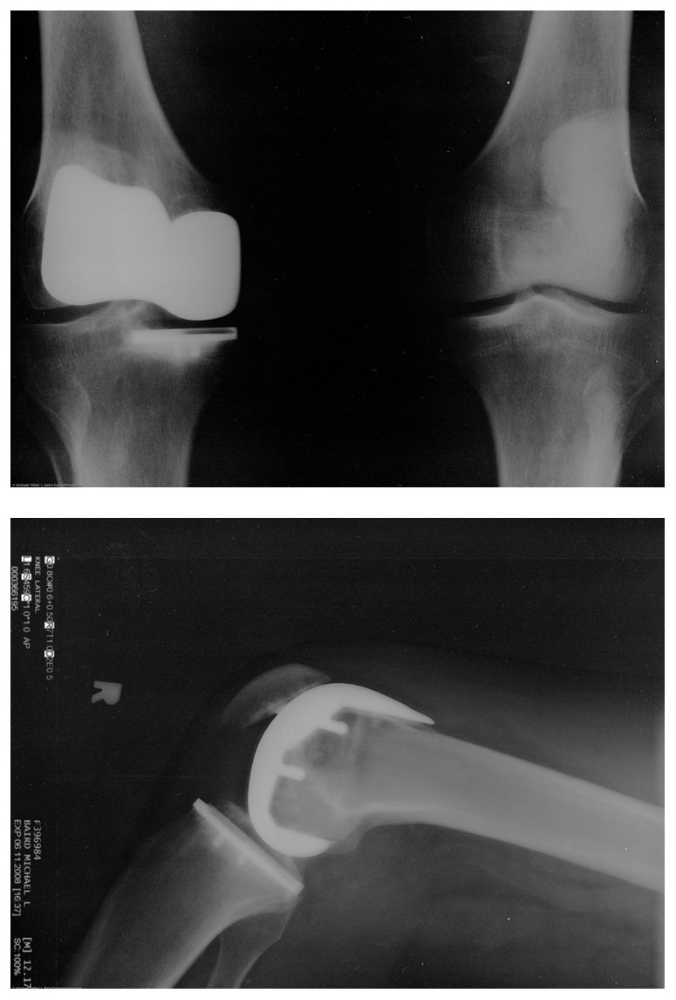
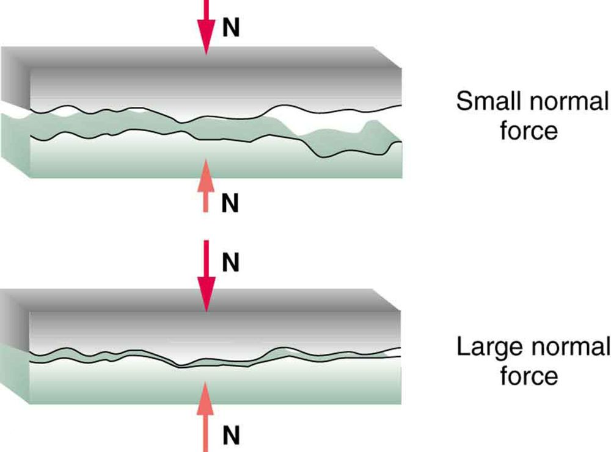
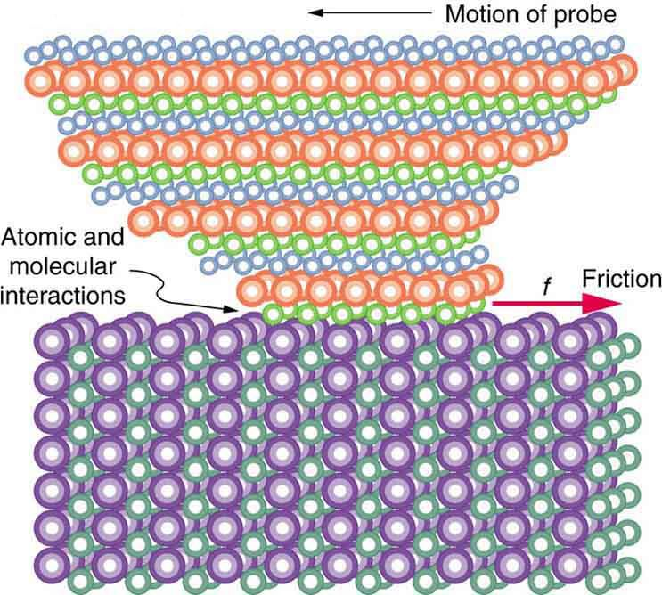

![The figure shows a crate on a flat surface, and a magnified view of a bottom corner of the crate and the supporting surface. The magnified view shows that there is roughness in the two surfaces in contact with each other. A black arrow points toward the right, away from the crate, and it is labeled as the direction of motion or attempted motion. A red arrow pointing toward the left is located near the bottom left corner of the crate, at the interface between that corner and the supporting surface. The red arrow is labeled as f, representing friction between the two surfaces in contact with each other.](Figure_06_01_01a.jpg)
The original, as published: OpenStax, College Physics 2e, Urone, Hinrichs, section 5.1 Friction. © Rice University. CC BY-NC-SA 4.0, https://creativecommons.org/licenses/by-nc-sa/4.0/. Imported as published, from https://openstax.org/books/college-physics-2e/pages/5-1-friction
By the end of this section, you will be able to:
Friction is a force that is around us all the time that opposes relative motion between surfaces in contact but also allows us to move (which you have discovered if you have ever tried to walk on ice). While a common force, the behavior of friction is actually very complicated and is still not completely understood. We have to rely heavily on observations for whatever understandings we can gain. However, we can still deal with its more elementary general characteristics and understand the circumstances in which it behaves.
Friction is a force that opposes relative motion between surfaces in contact.
One of the simpler characteristics of friction is that it is parallel to the contact surface between surfaces and always in a direction that opposes motion or attempted motion of the systems relative to each other. If two surfaces are in contact and moving relative to one another, then the friction between them is called kinetic friction. For example, friction slows a hockey puck sliding on ice. But when objects are stationary, static friction can act between them; the static friction is usually greater than the kinetic friction between the surfaces.
If two surfaces are in contact and moving relative to one another, then the friction between them is called kinetic friction.
Imagine, for example, trying to slide a heavy crate across a concrete floor—you may push harder and harder on the crate and not move it at all. This means that the static friction responds to what you do—it increases to be equal to and in the opposite direction of your push. But if you finally push hard enough, the crate seems to slip suddenly and starts to move. Once in motion it is easier to keep it in motion than it was to get it started, indicating that the kinetic friction force is less than the static friction force. If you add mass to the crate, say by placing a box on top of it, you need to push even harder to get it started and also to keep it moving. Furthermore, if you oiled the concrete you would find it to be easier to get the crate started and keep it going (as you might expect).
the figure is a crude pictorial representation of how friction occurs at the interface between two objects. Close-up inspection of these surfaces shows them to be rough. So when you push to get an object moving (in this case, a crate), you must raise the object until it can skip along with just the tips of the surface hitting, break off the points, or do both. A considerable force can be resisted by friction with no apparent motion. The harder the surfaces are pushed together (such as if another box is placed on the crate), the more force is needed to move them. Part of the friction is due to adhesive forces between the surface molecules of the two objects, which explain the dependence of friction on the nature of the substances. Adhesion varies with substances in contact and is a complicated aspect of surface physics. Once an object is moving, there are fewer points of contact (fewer molecules adhering), so less force is required to keep the object moving. At small but nonzero speeds, friction is nearly independent of speed.
The magnitude of the frictional force has two forms: one for static situations (static friction), the other for when there is motion (kinetic friction).
When there is no motion between the objects, the magnitude of static friction is
where is the coefficient of static friction and is the magnitude of the normal force (the force perpendicular to the surface).
Magnitude of static friction is
where is the coefficient of static friction and is the magnitude of the normal force.
The symbol means less than or equal to, implying that static friction can have a minimum and a maximum value of . Static friction is a responsive force that increases to be equal and opposite to whatever force is exerted, up to its maximum limit. Once the applied force exceeds , the object will move. Thus
Once an object is moving, the magnitude of kinetic friction is given by
where is the coefficient of kinetic friction. A system in which is described as a system in which friction behaves simply.
The magnitude of kinetic friction is given by
where is the coefficient of kinetic friction.
As seen in the table, the coefficients of kinetic friction are less than their static counterparts. That values of in the table are stated to only one or, at most, two digits is an indication of the approximate description of friction given by the above two equations.
| System | Static friction | Kinetic friction |
|---|---|---|
| Rubber on dry concrete | 1.0 | 0.7 |
| Rubber on wet concrete | 0.7 | 0.5 |
| Wood on wood | 0.5 | 0.3 |
| Waxed wood on wet snow | 0.14 | 0.1 |
| Metal on wood | 0.5 | 0.3 |
| Steel on steel (dry) | 0.6 | 0.3 |
| Steel on steel (oiled) | 0.05 | 0.03 |
| Teflon on steel | 0.04 | 0.04 |
| Bone lubricated by synovial fluid | 0.016 | 0.015 |
| Shoes on wood | 0.9 | 0.7 |
| Shoes on ice | 0.1 | 0.05 |
| Ice on ice | 0.1 | 0.03 |
| Steel on ice | 0.04 | 0.02 |
The equations given earlier include the dependence of friction on materials and the normal force. The direction of friction is always opposite that of motion, parallel to the surface between objects, and perpendicular to the normal force. For example, if the crate you try to push (with a force parallel to the floor) has a mass of 100 kg, then the normal force would be equal to its weight, , perpendicular to the floor. If the coefficient of static friction is 0.45, you would have to exert a force parallel to the floor greater than to move the crate. Once there is motion, friction is less and the coefficient of kinetic friction might be 0.30, so that a force of only 290 N () would keep it moving at a constant speed. If the floor is lubricated, both coefficients are considerably less than they would be without lubrication. Coefficient of friction is a unitless quantity with a magnitude usually between 0 and 1.0. The coefficient of the friction depends on the two surfaces that are in contact.
Find a small plastic object (such as a food container) and slide it on a kitchen table by giving it a gentle tap. Now spray water on the table, simulating a light shower of rain. What happens now when you give the object the same-sized tap? Now add a few drops of (vegetable or olive) oil on the surface of the water and give the same tap. What happens now? This latter situation is particularly important for drivers to note, especially after a light rain shower. Why?
Many people have experienced the slipperiness of walking on ice. However, many parts of the body, especially the joints, have much smaller coefficients of friction—often three or four times less than ice. A joint is formed by the ends of two bones, which are connected by thick tissues. The knee joint is formed by the lower leg bone (the tibia) and the thighbone (the femur). The hip is a ball (at the end of the femur) and socket (part of the pelvis) joint. The ends of the bones in the joint are covered by cartilage, which provides a smooth, almost glassy surface. The joints also produce a fluid (synovial fluid) that reduces friction and wear. A damaged or arthritic joint can be replaced by an artificial joint (the figure). These replacements can be made of metals (stainless steel or titanium) or plastic (polyethylene), also with very small coefficients of friction.

Other natural lubricants include saliva produced in our mouths to aid in the swallowing process, and the slippery mucus found between organs in the body, allowing them to move freely past each other during heartbeats, during breathing, and when a person moves. Artificial lubricants are also common in hospitals and doctor’s clinics. For example, when ultrasonic imaging is carried out, the gel that couples the transducer to the skin also serves to lubricate the surface between the transducer and the skin—thereby reducing the coefficient of friction between the two surfaces. This allows the transducer to move freely over the skin.
A skier with a mass of 62 kg is sliding down a snowy slope. Find the coefficient of kinetic friction for the skier if friction is known to be 45.0 N.
The magnitude of kinetic friction was given in to be 45.0 N. Kinetic friction is related to the normal force as ; thus, the coefficient of kinetic friction can be found if we can find the normal force of the skier on a slope. The normal force is always perpendicular to the surface, and since there is no motion perpendicular to the surface, the normal force should equal the component of the skier’s weight perpendicular to the slope. (See the skier and free-body diagram in the figure.)
![The figure shows a skier going down a slope that forms an angle of 25 degrees with the horizontal. The weight of the skier, labeled w, is represented by a red arrow pointing vertically downward. This weight is divided into two components, w perpendicular is perpendicular to the slope, and w parallel is parallel to the slope. The normal force, labeled N, is also perpendicular to the slope, equal in magnitude but opposite in direction to w perpendicular. The friction, f, is represented by a red arrow pointing upslope. In addition, the figure shows a free body diagram that shows the relative magnitudes and directions of w, f, and N.](Figure_06_01_03a.jpg)
That is,
Substituting this into our expression for kinetic friction, we get
which can now be solved for the coefficient of kinetic friction .
Solving for gives
Substituting known values on the right-hand side of the equation,
This result is a little smaller than the coefficient listed in the table for waxed wood on snow, but it is still reasonable since values of the coefficients of friction can vary greatly. In situations like this, where an object of mass slides down a slope that makes an angle with the horizontal, friction is given by . All objects will slide down a slope with constant acceleration under these circumstances. Proof of this is left for this chapter’s Problems and Exercises.
An object will slide down an inclined plane at a constant velocity if the net force on the object is zero. We can use this fact to measure the coefficient of kinetic friction between two objects. As shown in the example, the kinetic friction on a slope . The component of the weight down the slope is equal to (see the free-body diagram in the figure). These forces act in opposite directions, so when they have equal magnitude, the acceleration is zero. Writing these out:
Solving for , we find that
Put a coin on a book and tilt it until the coin slides at a constant velocity down the book. You might need to tap the book lightly to get the coin to move. Measure the angle of tilt relative to the horizontal and find . Note that the coin will not start to slide at all until an angle greater than is attained, since the coefficient of static friction is larger than the coefficient of kinetic friction. Discuss how this may affect the value for and its uncertainty.
We have discussed that when an object rests on a horizontal surface, there is a normal force supporting it equal in magnitude to its weight. Furthermore, simple friction is always proportional to the normal force.
The simpler aspects of friction dealt with so far are its macroscopic (large-scale) characteristics. Great strides have been made in the atomic-scale explanation of friction during the past several decades. Researchers are finding that the atomic nature of friction seems to have several fundamental characteristics. These characteristics not only explain some of the simpler aspects of friction—they also hold the potential for the development of nearly friction-free environments that could save hundreds of billions of dollars in energy which is currently being converted (unnecessarily) to heat.
the figure illustrates one macroscopic characteristic of friction that is explained by microscopic (small-scale) research. We have noted that friction is proportional to the normal force, but not to the area in contact, a somewhat counterintuitive notion. When two rough surfaces are in contact, the actual contact area is a tiny fraction of the total area since only high spots touch. When a greater normal force is exerted, the actual contact area increases, and it is found that the friction is proportional to this area.

But the atomic-scale view promises to explain far more than the simpler features of friction. The mechanism for how heat is generated is now being determined. In other words, why do surfaces get warmer when rubbed? Essentially, atoms are linked with one another to form lattices. When surfaces rub, the surface atoms adhere and cause atomic lattices to vibrate—essentially creating sound waves that penetrate the material. The sound waves diminish with distance and their energy is converted into heat. Chemical reactions that are related to frictional wear can also occur between atoms and molecules on the surfaces. the figure shows how the tip of a probe drawn across another material is deformed by atomic-scale friction. The force needed to drag the tip can be measured and is found to be related to shear stress, which will be discussed later in this chapter. The variation in shear stress is remarkable (more than a factor of ) and difficult to predict theoretically, but shear stress is yielding a fundamental understanding of a large-scale phenomenon known since ancient times—friction.

Explore the forces at work when you try to push a filing cabinet. Create an applied force and see the resulting friction force and total force acting on the cabinet. Charts show the forces, position, velocity, and acceleration vs. time. Draw a free-body diagram of all the forces (including gravitational and normal forces).
When a force of 20 N is applied to a stationary box weighing 40 N, the box does not move. This means the coefficient of static friction
(b)
A 2-kg block slides down a ramp which is at an incline of 25º. If the frictional force is 4.86 N, what is the coefficient of friction? At what incline will the box slide at a constant velocity? Assume g = 10 m/s2.
A block is given a short push and then slides with constant friction across a horizontal floor. Which statement best explains the direction of the force that friction applies on the moving block?
(c)
A student pushes a cardboard box across a carpeted floor and afterwards notices that the bottom of the box feels warm. Explain how interactions between molecules in the cardboard and molecules in the carpet produced this heat.
Define normal force. What is its relationship to friction when friction behaves simply?
The glue on a piece of tape can exert forces. Can these forces be a type of simple friction? Explain, considering especially that tape can stick to vertical walls and even to ceilings.
When you learn to drive, you discover that you need to let up slightly on the brake pedal as you come to a stop or the car will stop with a jerk. Explain this in terms of the relationship between static and kinetic friction.
When you push a piece of chalk across a chalkboard, it sometimes screeches because it rapidly alternates between slipping and sticking to the board. Describe this process in more detail, in particular explaining how it is related to the fact that kinetic friction is less than static friction. (The same slip-grab process occurs when tires screech on pavement.)
A physics major is cooking breakfast when he notices that the frictional force between his steel spatula and his Teflon frying pan is only 0.200 N. Knowing the coefficient of kinetic friction between the two materials, he quickly calculates the normal force. What is it?
(a) When rebuilding her car’s engine, a physics major must exert 300 N of force to insert a dry steel piston into a steel cylinder. What is the magnitude of the normal force between the piston and cylinder? (b) What is the magnitude of the force would she have to exert if the steel parts were oiled?
(a) What is the maximum frictional force in the knee joint of a person who supports 66.0 kg of her mass on that knee? (b) During strenuous exercise it is possible to exert forces to the joints that are easily ten times greater than the weight being supported. What is the maximum force of friction under such conditions? The frictional forces in joints are relatively small in all circumstances except when the joints deteriorate, such as from injury or arthritis. Increased frictional forces can cause further damage and pain.
Suppose you have a 120-kg wooden crate resting on a wood floor. (a) What maximum force can you exert horizontally on the crate without moving it? (b) If you continue to exert this force once the crate starts to slip, what will the magnitude of its acceleration then be?
(a) 588 N
(b)
(a) If half of the weight of a small utility truck is supported by its two drive wheels, what is the magnitude of the maximum acceleration it can achieve on dry concrete? (b) Will a metal cabinet lying on the wooden bed of the truck slip if it accelerates at this rate? (c) Solve both problems assuming the truck has four-wheel drive.
A team of eight dogs pulls a sled with waxed wood runners on wet snow (mush!). The dogs have average masses of 19.0 kg, and the loaded sled with its rider has a mass of 210 kg. (a) Calculate the magnitude of the acceleration starting from rest if each dog exerts an average force of 185 N backward on the snow. (b) What is the magnitude of the acceleration once the sled starts to move? (c) For both situations, calculate the magnitude of the force in the coupling between the dogs and the sled.
(a) 3.29 m/s2
(b) 3.52 m/s2
(c) 980 N; 945 N
Consider the 65.0-kg ice skater being pushed by two others shown in the figure. (a) Find the direction and magnitude of , the total force exerted on her by the others, given that the magnitudes and are 26.4 N and 18.6 N, respectively. (b) What is her initial acceleration if she is initially stationary and wearing steel-bladed skates that point in the direction of ? (c) What is her acceleration assuming she is already moving in the direction of ? (Remember that friction always acts in the direction opposite that of motion or attempted motion between surfaces in contact.)
![(a) Overhead view of two ice skaters pushing on a third. One skater pushes with a force F two, represented by an arrow pointing up, and a second skater pushes with a force F one, represented by an arrow pointing from left to right. Vector F one and vector F two are along the arms of the two skaters acting on the third skater. A vector diagram is shown in the form of a right triangle in which the base is vector F one pointing east, and perpendicular to F one is vector F two pointing north. The resultant vector is shown by the hypotenuse pointing northeast. (b) Free-body diagram showing only the forces acting on the skater.](https://raw.githubusercontent.com/openstax/osbooks-college-physics-bundle/main/media/Figure 04_01_01a-e066.jpg)
Show that the acceleration of any object down a frictionless incline that makes an angle with the horizontal is . (Note that this acceleration is independent of mass.)
Show that the acceleration of any object down an incline where friction behaves simply (that is, where ) is Note that the acceleration is independent of mass and reduces to the expression found in the previous problem when friction becomes negligibly small
Calculate the deceleration of a snow boarder going up a , slope assuming the coefficient of friction for waxed wood on wet snow. The result of the exercise may be useful, but be careful to consider the fact that the snow boarder is going uphill. Explicitly show how you follow the steps in Problem-Solving Strategies.
(a) Calculate the acceleration of a skier heading down a slope, assuming the coefficient of friction for waxed wood on wet snow. (b) Find the angle of the slope down which this skier could coast at a constant velocity. You can neglect air resistance in both parts, and you will find the result of the exercise to be useful. Explicitly show how you follow the steps in the Problem-Solving Strategies.
If an object is to rest on an incline without slipping, then friction must equal the component of the weight of the object parallel to the incline. This requires greater and greater friction for steeper slopes. Show that the maximum angle of an incline above the horizontal for which an object will not slide down is . You may use the result of the previous problem. Assume that and that static friction has reached its maximum value.
Calculate the maximum deceleration of a car that is heading down a slope (one that makes an angle of with the horizontal) under the following road conditions. You may assume that the weight of the car is evenly distributed on all four tires and that the coefficient of static friction is involved—that is, the tires are not allowed to slip during the deceleration. (Ignore rolling.) Calculate for a car: (a) On dry concrete. (b) On wet concrete. (c) On ice, assuming that , the same as for shoes on ice.
Calculate the maximum acceleration of a car that is heading up a slope (one that makes an angle of with the horizontal) under the following road conditions. Assume that only half the weight of the car is supported by the two drive wheels and that the coefficient of static friction is involved—that is, the tires are not allowed to slip during the acceleration. (Ignore rolling.) (a) On dry concrete. (b) On wet concrete. (c) On ice, assuming that , the same as for shoes on ice.
(a)
(b)
(c)
Repeat the exercise for a car with four-wheel drive.
A freight train consists of two engines and 45 cars with average masses of . (a) What force must each engine exert backward on the track to accelerate the train at a rate of if the force of friction is , assuming the engines exert identical forces? This is not a large frictional force for such a massive system. Rolling friction for trains is small, and consequently trains are very energy-efficient transportation systems. (b) What is the magnitude of the force in the coupling between the 37th and 38th cars (this is the force each exerts on the other), assuming all cars have the same mass and that friction is evenly distributed among all of the cars and engines?
(a)
(b)
Consider the 52.0-kg mountain climber in the figure. (a) Find the tension in the rope and the force that the mountain climber must exert with her feet on the vertical rock face to remain stationary. Assume that the force is exerted parallel to her legs. Also, assume negligible force exerted by her arms. (b) What is the minimum coefficient of friction between her shoes and the cliff?

A contestant in a winter sporting event pushes a 45.0-kg block of ice across a frozen lake as shown in the figure(a). (a) Calculate the minimum force he must exert to get the block moving. (b) What is the magnitude of its acceleration once it starts to move, if that force is maintained?
(a)
(b)
Repeat the exercise with the contestant pulling the block of ice with a rope over his shoulder at the same angle above the horizontal as shown in the figure(b).

friction a force that opposes relative motion or attempts at motion between systems in contact
kinetic friction a force that opposes the motion of two systems that are in contact and moving relative to one another
static friction a force that opposes the motion of two systems that are in contact and are not moving relative to one another
magnitude of static friction , where is the coefficient of static friction and is the magnitude of the normal force
magnitude of kinetic friction , where is the coefficient of kinetic friction